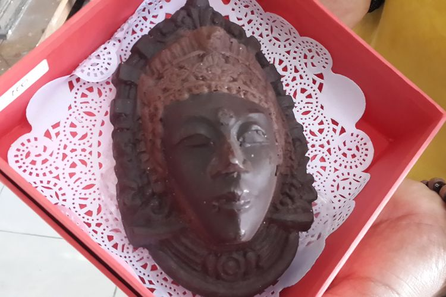

Mie Kocok Khas Bandung (Dok.SHUTTERSTOCK/ARIYANI TEDJO)
Sambil berboncengan mengendarai sepeda motor, Dilan dan Milea menyusuri jalan-jalan Kota Bandung yang rindang.
Ditemani sejuknya udara sore Kota Bandung, Dilan terus memacu motornya menelusuri Jalan Ambon. Tak lama, Dilan memperlambat laju motornya dan berhenti di sebuah tempat makan bernama Mie Baso Akung.
“Aku suka dengan orang yang mengenang para pahlawan dengan bakso. Ini Bakso Yamin, untuk mengenang Mohammad Yamin," kata Dilan sambil mengaduk Mie Yamin di makngkoknya.
Cuplikan adegan dari film Dilan 1990 tersebut menggambarkan Kota Bandung secara menyeluruh. Tidak hanya hawa yang sejuk, Kota ini juga menyimpan sejarah perjuangan bangsa Indonesia. Selain itu, Bandung pun memiliki kekayaan budaya yang tercermin dari keragaman kulinernya.
Berbicara tentang kuliner, Kota Kembang ini menawarkan beragam jenis pengalaman kuliner, dari makanan tradisional, deretan kafe bergaya kolonial ataupun modern, hingga restoran kekinian. Di Bandung, kamu juga bisa dengan mudah menemui berbagai olahan makanan yang berbahan dasar mi yang merupakan hasil akulturasi budaya lokal dengan Tionghoa, mulai dari mi ayam, mi kocok, hingga mi yamin seperti yang dinikmati Dilan dan Milea.
Berikut Kompas.com telah merangkum 5 tempat makan dengan menu mi yang wajib kamu coba ketika berkunjung ke Bandung saat liburan #DiIndonesiaAja.
Warung mi yang tampil di film Dilan 1990 ini merupakan salah satu tempat kuliner legendaris di Kota Kembang yang sudah buka sejak 1970-an. Dahulu, warungnya terletak di Jalan Ambon. Kini warung mi bakso itu berlokasi di Jalan Lodaya No. 123, Buahbatu.
Melansir jabar.tribunnews.com, Kamis (20/7/2017), kedai bakso ini memiliki tiga menu andalan, yakni bakso kuah, mi kuah, dan mi yamin, yang disajikan dengan topping ayam cincang gurih.
Ada dua pilihan ukuran porsi untuk menu mi kuah dan mi yamin, yaitu ukuran satu porsi dan setengah porsi. Perbedaan keduanya hanya terletak pada porsi mi yang disajikan.
Selain itu, kamu juga bisa menyesuaikan tingkat kemanisan mi yamin sesuai selera, mulai dari yamin asin, sedang, atau manis.
Berawal dari kedai kecil di sudut Jalan Naripan, Kota Bandung, kedai Mie Naripan berhasil bertahan selama puluhan tahun. Salah satu alasan Mie Naripan bisa bertahan lama adalah minya dibuat dengan menggunakan resep turun-temurun dengan cita rasa yang tetap konsisten sejak 1965.
Olahan mi satu ini pun cukup istimewa karena mi yang digunakan merupakan hasil produksi sendiri. Ciri khas minya ada pada tekstur yang kenyal tapi mudah dikunyah.
“Dengan adonan telur yang lebih banyak, rasa dan kekenyalan mi jadi berbeda darimi lainnya,” jelas pemilik Kedai Mie Naripan, Jhon, dikutip dari jabar.tribunnews.com, Senin (14/8/2017).
Terdapat dua menu favorit di kedai ini, yaitu mi yamin dan mi kuah naripan. Untuk mi yamin, di sini tersedia yamin manis dan asin.
Sementara itu, untuk varian mi kuah disajikan dengan kuah dan bumbu yang tidak terlalu kental, bahkan cenderung hambar. Namun, rasa “hambar” tersebut justru membuat para pengunjung semakin penasaran dengan cita rasanya.

Mie Yamin Khas Bandung (Dok.SHUTTERSTOCK/RAJA SENI)
Di Bandung, sajian mi kocok bisa dengan mudah kamu temukan. Namun, ada satu tempat makan yang patut kamu kunjungi saat ingin makan mi kocok, yaitu Mih Kocok Mang Dadeng yang berlokasi di Jalan Banteng, Bandung.
Mi Kocok merupakan hidangan khas Bandung yang terdiri cari campuran Mie Kuning pipih,tauge,dan potongan kikil sapi yang disiram dengan kuah kaldu gurih.
Berbeda dengan mi kocok pada umumnya, mi kocok di Mih Kocok Mang Dadeng dibuat menggunakan 27 macam bumbu rempah-rempah. Selain itu, rebusan tulang kaki sapi untuk kaldunya pun dibuat dengan cara berbeda.
Kaki sapi direbus selama kurang lebih empat jam hingga menghasilkan kaldu. Setelah itu, ditambahkan daun salam, serai, serta jahe ke dalam rebusan sehingga menghasilkan kuah kental beraroma rempah.
Seporsi mi kocoknya semakin istimewa karena dilengkapi dengan topping kikil sapi empuk dan sumsum sapi yang lembut.
Ketika membahas hidangan mi khas Bandung, menu mi yamin dari Toko You di Jalan Hasanudin, Coblong, Bandung, tidak boleh terlewatkan. Ketika membahas hidangan mi khas Bandung, menu mi yamin dari Toko You di Jalan Hasanudin, Coblong, Bandung, tidak boleh terlewatkan.
Toko bernuansa klasik itu memiliki tiga varian mi yang bisa dipilih sesuai selera, yakni mi, bihun, dan kwetiau. Kalau bingung mau pilih yang mana, kamu bisa memadukan dua jenis mi dalam satu porsi.
Misalnya, setengah porsi mi dengan setengah porsi kwetiau kuah atau setengah porsi mi dan setengah porsi bihun kuah. Kamu juga bisa memilih setengah porsi mi dengan setengah porsi bihun yamin dalam satu mangkuk.
Tidak ketinggalan, Toko You juga menyediakan berbagai hidangan pendamping, seperti bakso sapi, bakso tahu, pangsit, dan siomay.
Bagi penggemar kuliner pedas, jangan sampai melewatkan sajian mi dari kedai Mie Rica Kejaksaan yang sudah berjualan sejak 1960-an. Sesuai namanya, hidangan mi di sini punya cita rasa pedas yang menggoyang lidah.
Warung yang berlokasi di Jalan Kejaksaan, Bandung, itu punya banyak pilihan menu, mulai dari mi ayam, mi caciang, mi rica babi, mi rica ayam, mi pedas udang goreng, mi pedas casao, hingga mi iga sapi.
Biar makin sedap, jangan lupa pesan juga topping dan hidangan pelengkapnya, seperti bakso ikan, bakso sapi, pangsit kuah dan goreng, bakso udang goreng, serta babat kuah.
Itu dia rekomendasi 5 tempat makan mi di Bandung yang patut dicoba. Jika ingin berkunjung ke sana, ingatlah untuk selalu menerapkan protokol kesehatan, yakni clean, healthy, safety, and environment sustainability (CHSE).
Caranya dengan memastikan tempat yang dikunjungi bersih, selalu mencuci tangan dengan air mengalir dan sabun sebelum dan setelah makan, menjaga jarak aman dengan pengunjung lain, serta hindari mengunjungi tempat makan yang terlalu ramai.
Dengan begitu, kamu bisa berwisata kuliner dengan nyaman dan aman di masa adaptasi kebiasaan baru. Untuk informasi lengkap soal kuliner serta destinasi wisata di Bandung dan berbagai wilayah Indonesia lainnya bisa dicek di website Indonesia Travel, ya.
Last updated 3 mins ago